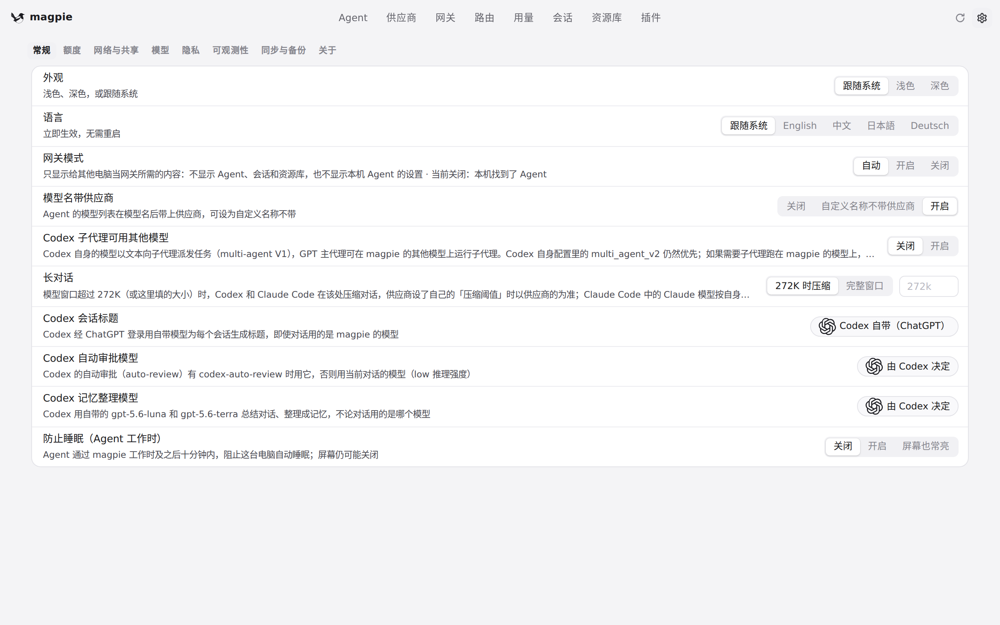
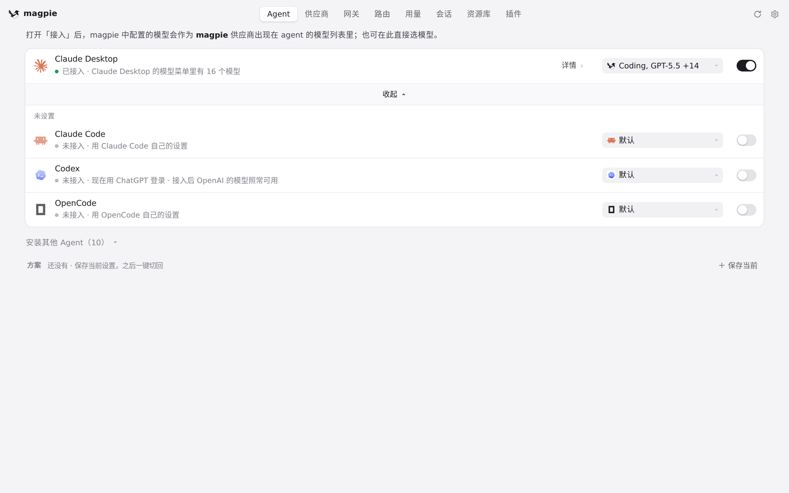
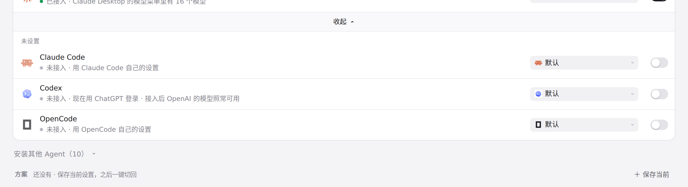

#1028 界面预览
commit 359db65 · 回到 PR · 设置页「常规」里的 Codex 子代理一行改了名称（Codex 子代理可用其他模型）和说明文字，并在行内新增一条默认隐藏的提示 #codexAgentsV1Warn：当 Codex 接管的配置里显式开着它自己的 features.multi_agent_v2 时显示，且开关切到开启时还会弹出一条警告状态。
红线是鼠标走过的轨迹，红色圆环是一次点击；底部文字是这一步在做什么。空格暂停，← → 逐段查看。

设置里的 Codex 子代理一行 · 设置常规页里 Codex 子代理这一行的名称、说明与开关（当前关闭）
设置里的 Codex 子代理一行 · 点击「开启」后这一行与页面状态
 设置里的 Codex 子代理一行 · 点击「关闭」后这一行
设置里的 Codex 子代理一行 · 点击「关闭」后这一行

Agents 页里 Codex 一行 · 展开后的 Agent 列表

Agents 页里 Codex 一行 · Agent 列表里 Codex 一行：它的提示（如有多 agent V2 冲突或需重启）会显示在这条状态里